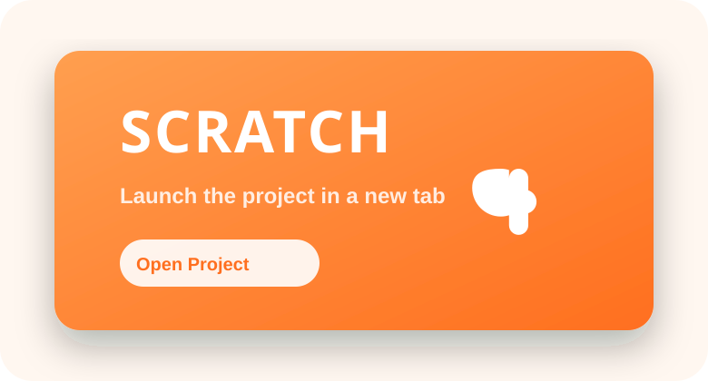

I designed “Story Trail,” an interactive Scratch experience where players help a camper choose sustainable actions during a forest hike. Building it required decomposing the story into sprites, backdrops, and event-driven scripts. The most challenging piece was synchronizing dialog transitions with sprite animations. At first, the program stuttered because I triggered multiple broadcast messages at once. Adding short waits and grouping code into custom blocks gave me reusable logic and smoother pacing.
This project reinforced two core programming lessons. First, prototyping iteratively matters. I used Scratch’s sprites as a visual debugger, watching variables change in real time while the stage played back my code.
Scratch Experience
I’ve never used Scratch before and was pleasantly surprised when I began building the Week 1 assignment. When I first read the prompt, I assumed I would need to code a project in Visual Studio Code, writing line-by-line functions. Instead, Scratch greeted me with vibrant sprites, customizable backgrounds, sound effects, and a library of blocks that snap together like puzzle pieces. I customized Sprite with new colors, swapped nature scenes as different on-screen elements were clicked, and added friendly dialogue and questions for the user. It felt simple, fun, and approachable—and I’m excited to keep exploring what’s possible as my question list about Scratch keeps growing.
Insights
This assignment challenged my assumption that traditional text-based code is the only path to building programs, websites, or apps. The block formation Scratch uses makes logic more tangible; each block’s shape communicates its purpose, which demystifies syntax. I also appreciate Scratch’s extensive library of sounds, backgrounds, and animations, which accelerates creativity even for beginners.
Comparison
Scratch feels very different from the programming concepts covered in Chapter 10 of the course textbook, Certmaster Learn Tech+. Section 10.1 emphasizes how syntax defines rules for languages like Java, C++, and Python—every statement, symbol, capital letter, punctuation mark, and comment matters (CompTIA, Inc. 10.1.2). Scratch still relies on syntax, but it hides the complexity behind block-based interactions. I see Scratch as a tool designed to simplify coding for small-scale, engaging projects, whereas interpreted languages such as JavaScript—my personal favorite for web development—offer flexibility across platforms. As the text notes, interpreted languages like Python, JavaScript, Ruby, and Perl provide portability and dynamic features (CompTIA, Inc. 10.1.4).
Programming Languages
Chapter 10 also outlines several language categories tailored to specific project needs: query languages, interpreted languages, assembly languages, and compiled languages. Query languages, including SQL, GraphQL, and XQuery, excel at retrieving, manipulating, defining, and controlling data (“Query languages are programming languages for searching a database or dataset,” Aerospike, 1). Interpreted languages such as Python, JavaScript, Ruby, and PHP enable rapid prototyping, cross-platform support, and automation—qualities I lean on frequently. Assembly languages (for example, x86, ARM, and PowerPC) shine in performance-critical scenarios where hardware-level control matters. Compiled languages like C, C++, C#, Go, and Rust deliver optimized performance and platform-specific capabilities. Understanding these categories helps me match the right language to a project’s goals and constraints.
Sources
- Aerospike. (n.d.). Query languages are programming languages for searching a database or dataset. https://www.aerospike.com
- CompTIA, Inc. (2025). CertMaster Learn Tech+. CompTIA Learning Center.